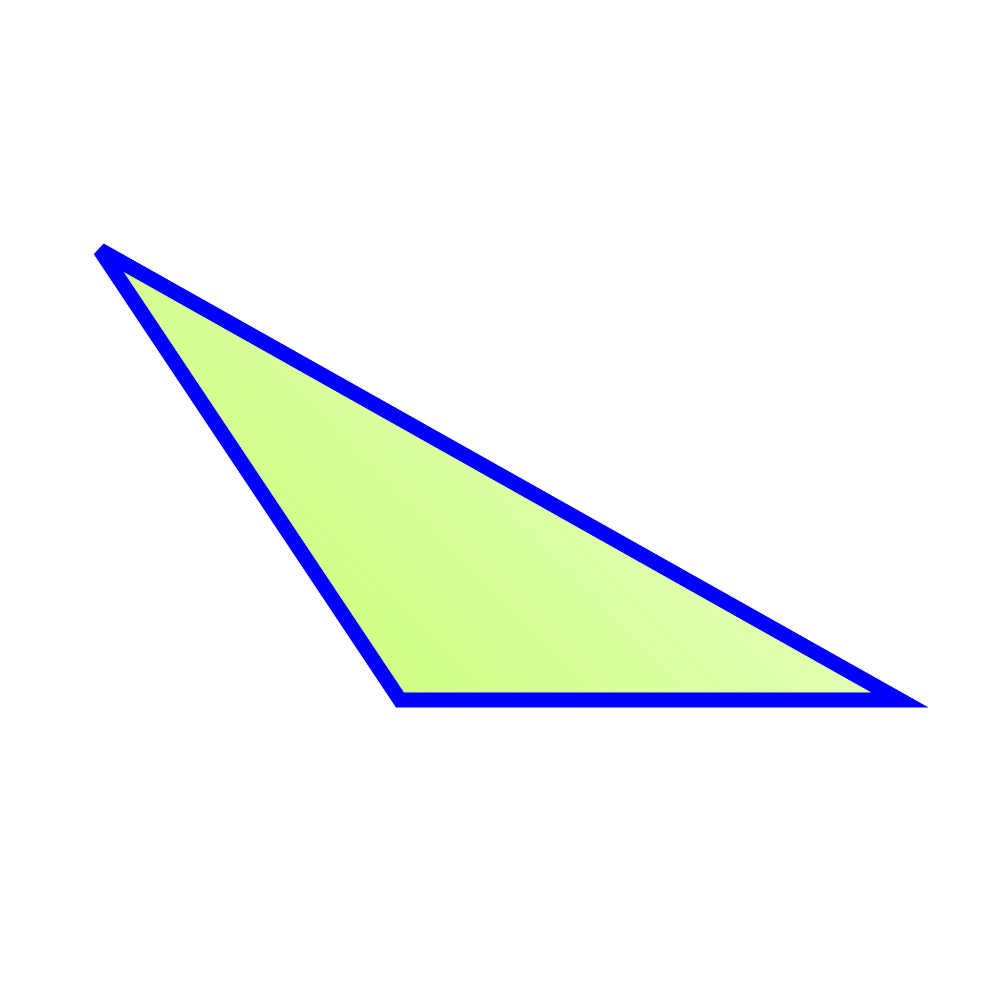
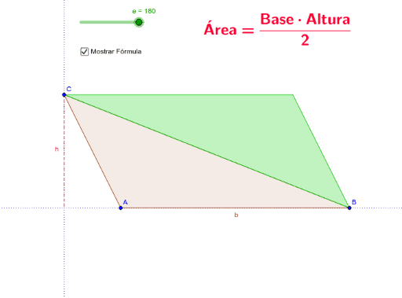
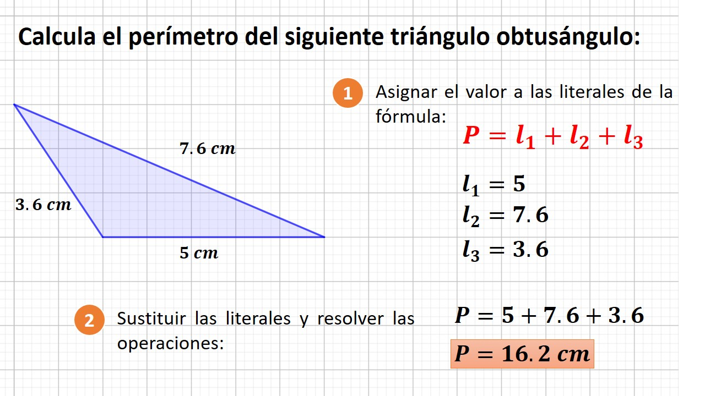

Triángulo Obtusángulo
¿Qué es?
Triángulo obtusángulo: si uno de sus ángulos interiores es obtuso (mayor de 90°); los otros dos son agudos (menores de 90°). Triángulo acutángulo: cuando sus tres ángulos interiores son menores de 90 grados.

Fórmula para calcular el área
Área(A): En este caso, nos basamos en la fórmula de Herón donde s es el semiperímetro, es decir, P/2.
Área = (b x h) / 2

Calcular el perímetro
El perímetro de un triángulo obtusángulo es igual a la suma de sus tres lados.

Características
- La característica principal que distingue este tipo de triángulo del resto es que, como ya mencionamos, sus ángulos internos son agudos; es decir, la medida de cada uno de sus ángulos es menor a 90 grados.
- La suma de los tres ángulos internos del triángulo obtusángulo es 180 grados, por ello, solo uno de sus ángulos internos puede ser mayor a 90 grados, mientras que la suma de los dos restantes es menor a 90 grados.
- El lado más largo del triángulo obtusángulo es opuesto al ángulo obtuso.
- El circuncentro del triángulo obtusángulo también cae fuera del triángulo (no sucede así con el triángulo acutángulo).
- Solamente es posible inscribir un cuadrado en el triángulo obtusángulo, apoyando uno de los lados del cuadrado sobre el lado más largo del triángulo. Se pueden dibujar dos cuadrados, apoyando el lado sobre los lados más cortos del triángulo, quedando un vértice no inscrito (que no toca el lado del triángulo).